Draw the change. Explore it together.
Design on real land, inspect the result in 2D and 3D, compare alternatives and share a design or a whole plan. Start with a short video or follow the written steps.
Open the map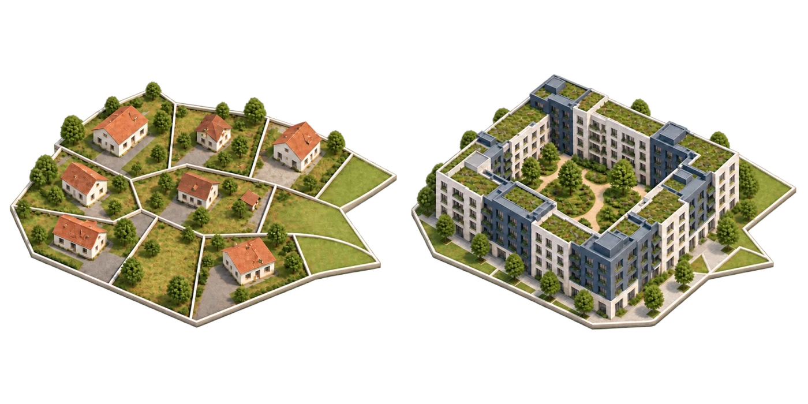
Watch, then try it
Twelve short walkthroughs recorded on 19 October 2026. Open the matching guide and use fullscreen for a closer look at the controls.
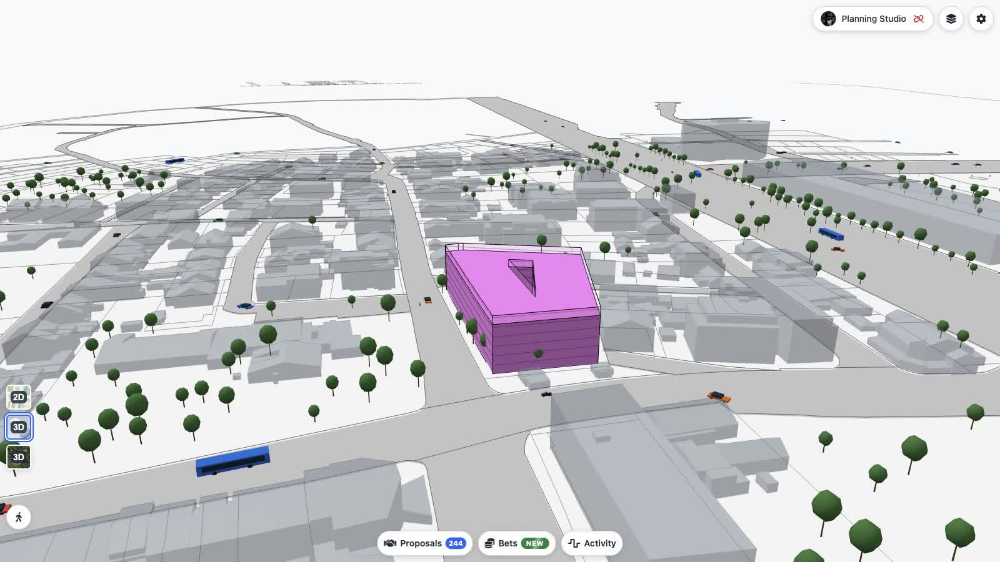
0:27Design a block
Adjust setbacks, building depth and height, then inspect the massing in 3D.
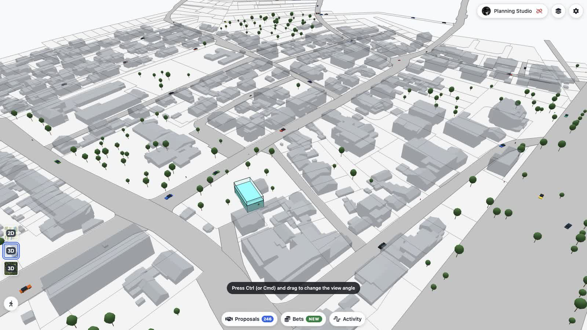
0:25Design row houses
Set the row dimensions and height rule, finish the design and inspect it in 3D.
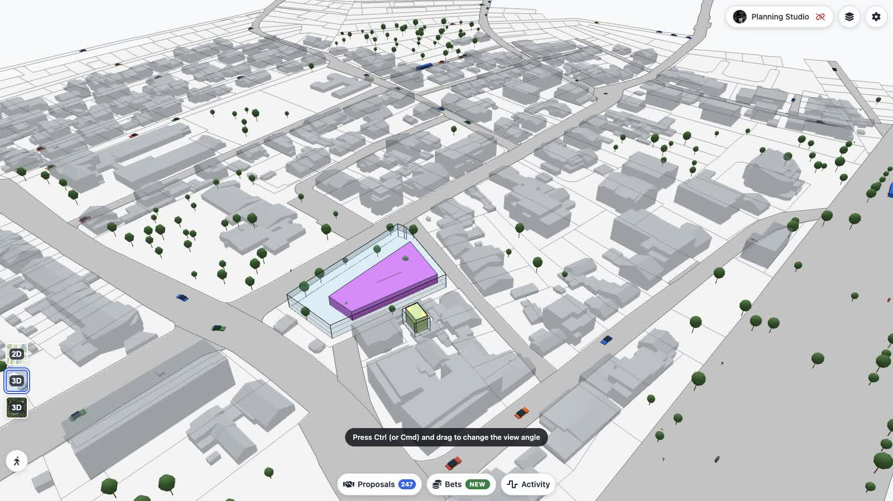
0:24Design detached houses
Set floors, boundary setbacks and plot size for the selected parcels.
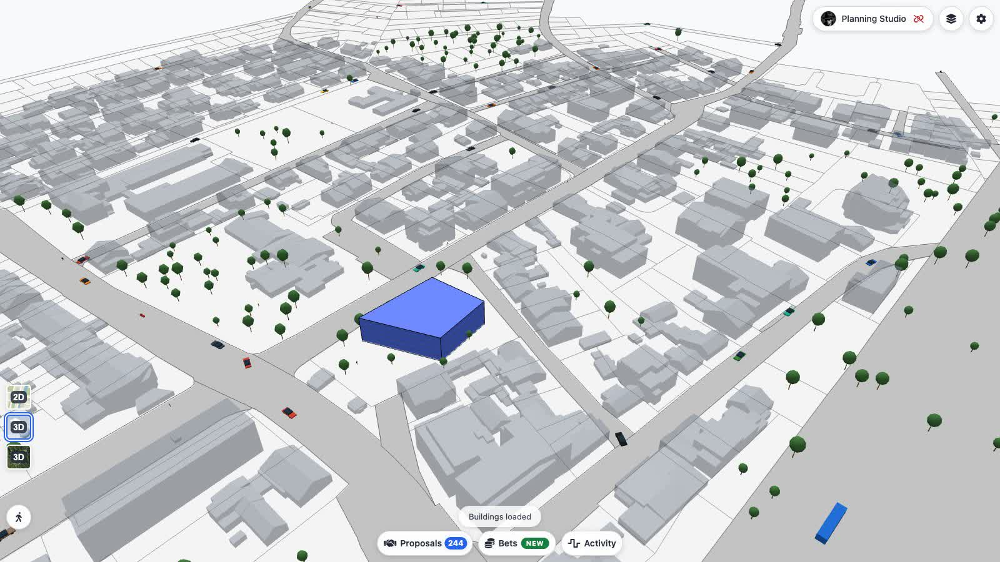
0:25Shape a freeform building
Drag footprint corners, adjust height and inspect the building in its surroundings.
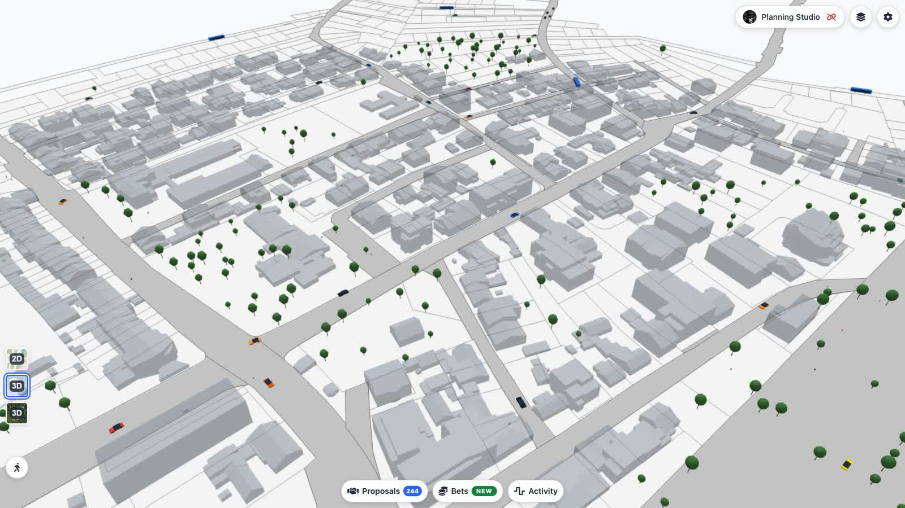
0:25Redesign parcel boundaries
Edit an automatic layout, compare plots and review each owner’s allocation.
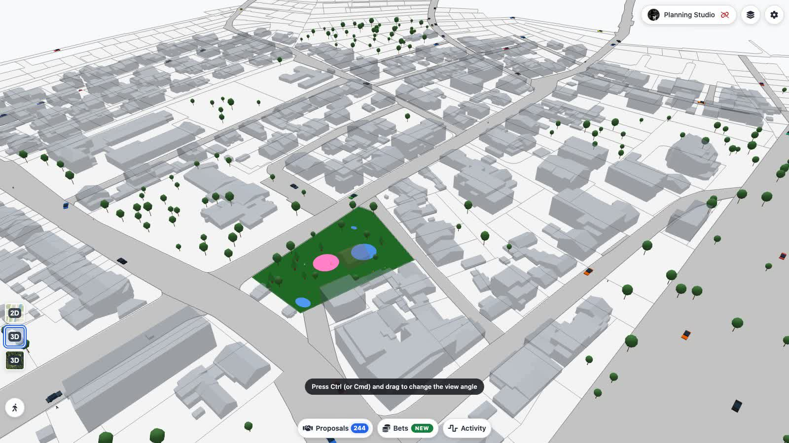
0:28Create a park
Place planting, ponds and paths, save the design and inspect it in 3D.
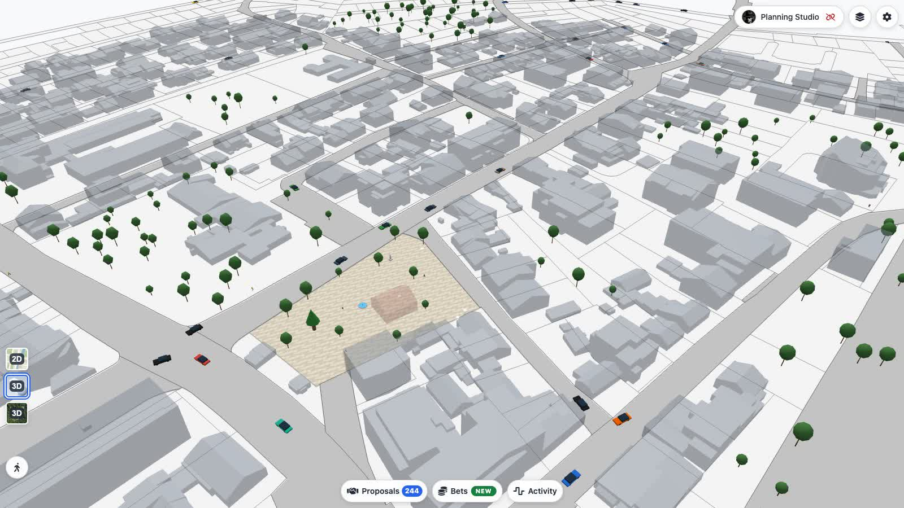
0:24Create a square
Arrange furniture on the map, save the square and inspect it in 3D.
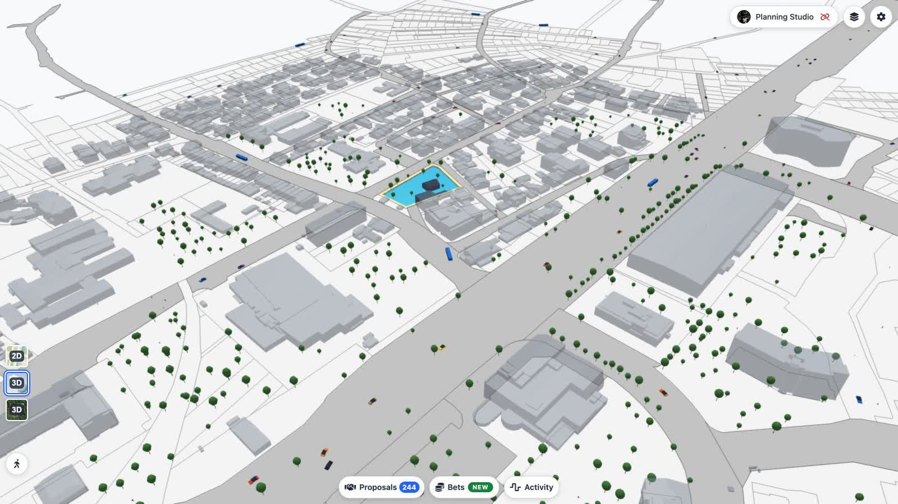
0:17Create a lake
Use the selected land for a water surface and inspect the shoreline in 3D.
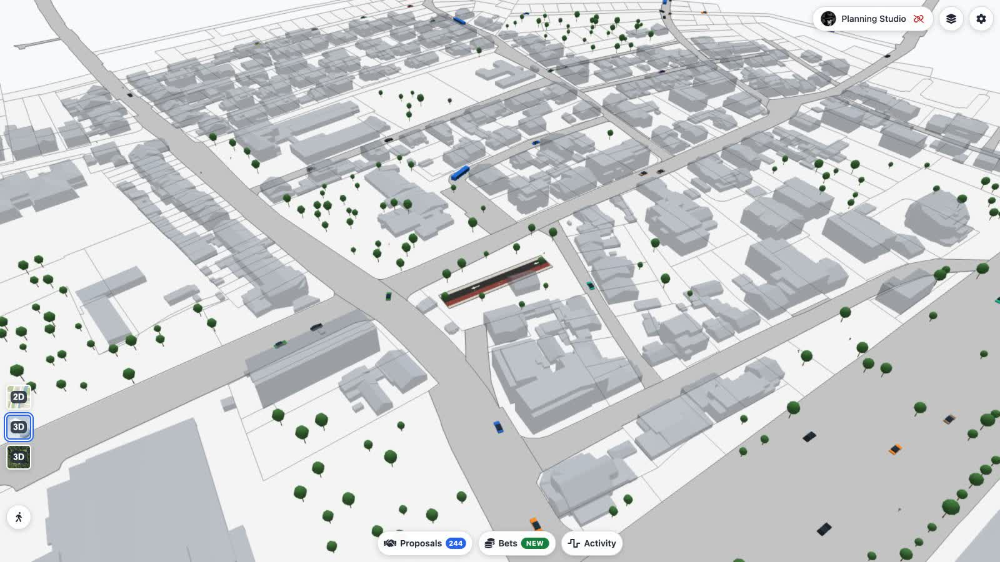
0:32Design a street
Compose the lane profile, draw the route and review a building crossing and the 3D result.
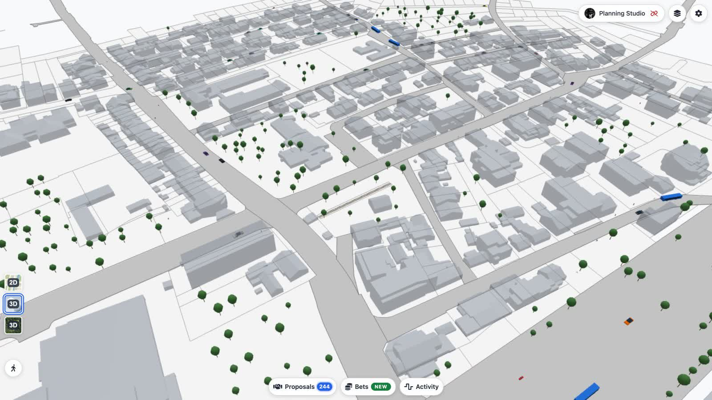
0:19Draw a rail alignment
Choose design speed, place the alignment and inspect the track in 3D.
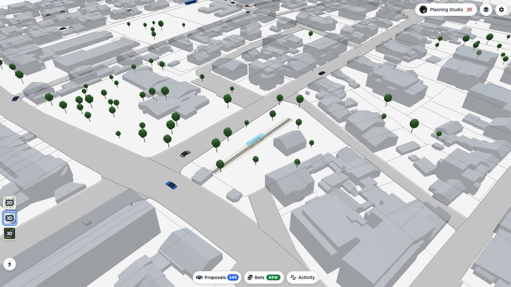
0:27Place a transit station
Align a tram stop to a compatible track, adjust its position and inspect its platform.
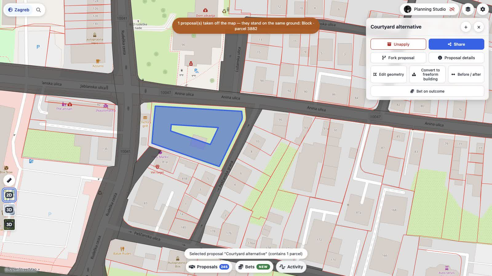
0:33Make a alternative design
Open parcel designs, fork a design and choose who decides on the alternative.
Start with a parcel or a site
-
Choose the land
Open the Design tab and choose parcels in Manual mode . The Selected parcels section shows your selection; click Done selecting when it is ready, then choose a design tool. Detect block grows the selection to the surrounding block.
-
Or draw a site
Use Custom site to start from a parcel outline, or Draw a site here on open ground. A site is an editable boundary for a design. Where parcel data is unavailable you can still explore a design; missing data does not establish ownership. Source parcels are provider records; a formed ground piece is a modeled result, not proof of a legal lot or ownership.
-
Build and finish
Choose a tool in the Design tab. Buildings and land readjustment open an on-map designer; parks, squares and lakes are created after selecting the site scope. Done finishes the designer and creates a local design applied to the map.
If a conflict prevents application, the app explains why and keeps the object parked in your designs list. Open it there to review the reason and apply it when the conflict is resolved.
Choose the tool for the change
| Tool | Use it for | Walkthrough |
|---|---|---|
| Freeform building | Draw and reshape individual footprints. Set height and green or paved surroundings. | House walkthrough |
| Block / Row houses / Detached | Set a building rule, its limits and minimum plot size. Inspect an example build-out. | Buildings |
| Park / Square / Lake | Create public space, then place its furniture on the map. | Parks, squares and lakes |
| Land readjustment | Divide automatically, draw freely or keep the existing parcels. Review owners and cash. | Land readjustment |
| Road / Track | Draw a corridor and compose its cross-section from lanes. | Roads and tracks |
Review, revise and build consent
Click an object to open its action panel. Design details holds the design, land, ownership and approval information. Unapply removes the design from the current map composition while keeping its record.
Open a design's details to inspect its geometry, land and status. Use Edit geometry to return to its designer; finishing creates an updated local design.
Share designs and decide an agreement
Finish a tool to create and apply a local design. In Designs, choose Share applied designs to publish selected designs and copy a share link. Someone opening the link can apply a local copy; sharing a design does not publish an agreement or record a decision.
To coordinate land and money, open Agreements and create an agreement from applied designs. Review its input parcels, resulting pieces, allocations, money and decision rule, then choose Propose to publish the designs with the agreement and copy its link. Owners sign decisions for that agreement; a binding owner rule can be minted by its sponsor and attested by its named lens. A community vote is non-binding and counted off-chain. Publication, a decision and execution are separate steps.
Compare alternatives
Use Before / after in design details or a designer and drag the divider across the same map. For two alternatives on one parcel, open Designs , tick two designs and click Compare . The comparison shows the land take, buildings, plots, ownership, consent and support for that parcel.
Share a design or a plan
Share in the object panel creates a link to one design. To share a composition, apply the designs you want, then choose Share entire plan . The shared composition preserves the applied set and its dependencies.
Local work is stored in this browser. Sharing uploads the records needed by the link; on-chain publication is a separate action. The app may ask for a public profile name when you share or publish.